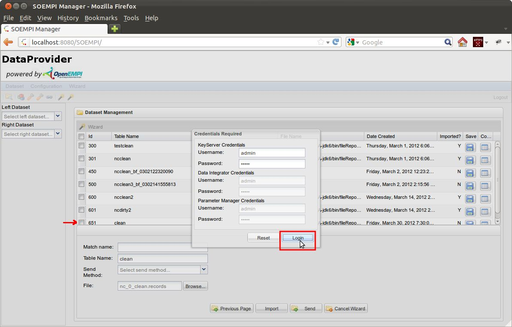

Data Import into Data Providers
The following steps will describe how to import a dataset from a file into SOEMPI.
- First please log in.

- Start the File Import Wizard either from the toolbar or from the menu:
- If you haven't done so, specify the various component settings, otherwise double check them.
In case if file import the Key Server related settings are the most relevant.
- The Bloom Filter Settings are important if you want to BF encode/transform some input fields.
Make sure that the default values are the same for the
Data Providers, otherwise matches may won't make any sense.
- You can import more variants of a given field from the file. For example we import the given
name and the family name attributes in their original form, their DoubleMetaphone transformation,
their BloomFilter encodings, and their SHA1 encodings too. For each entry you have to specify:
- which is the source column of the file (the separator value can be specified too, see above the datagrid)
- what transformations you may want to perform on the value before it is fed into the database column
- what is the meaning of the field
- what is the type of the field
- what should be the database column name
Besides that there are advanced possibilities to form one database column from more file input fields or
fed certain parts of one file filed into separate database columns, specify date formats, etc.
- At the next step you have to specify the actual file you wnat to import/upload (with the "Browse..." button).
You also have to give a unique name to the dataset. Let's import nc_0_clean.records into one Data Provider with
the dataset name clean, and nc_0_corrupt.records into the other Data Provider with
the dataset name dirty.
When you are done, press the Import Button!
- In case you perform Bloom Filter transformation during the import, a dialog will pop-up where you can specify
credentials for the Key Server. If no transformation requires external connection the import procedure will start right
away. Let's leave the default values in the Login dialog for the sake of the argument of this guide.

- The procedure starts, it takes a while depending on the size of the file, number of the records and transformations:
Currently the AJAX wait icon is a little covered.
- When the import finishes the "Imported" status of the file will switch to
"Y" from "N", and you'll see an Info pop-up for a short time (TODO: newer screenshot):
The following things happened in the background:
- The file was uploaded into the fileRepository directory.
- The mpi-config.xml should be updated in case you changed some settings.
- A new sequence and table was created in the database. The unique name is prefixed with the "tbl_ds_" string.
- There's an entry for the new dataset in the dataset table too:
- All of the column's information are stored for the newly imported dataset too. In this case we specified
different type of transformations for the 11 input fileds, so we ended up importing 24 columns:
- The column's information can be viewed from the user interface too.
Click on the View Columns icon at the row of the dataset you want to examine
- And finally the table itself: